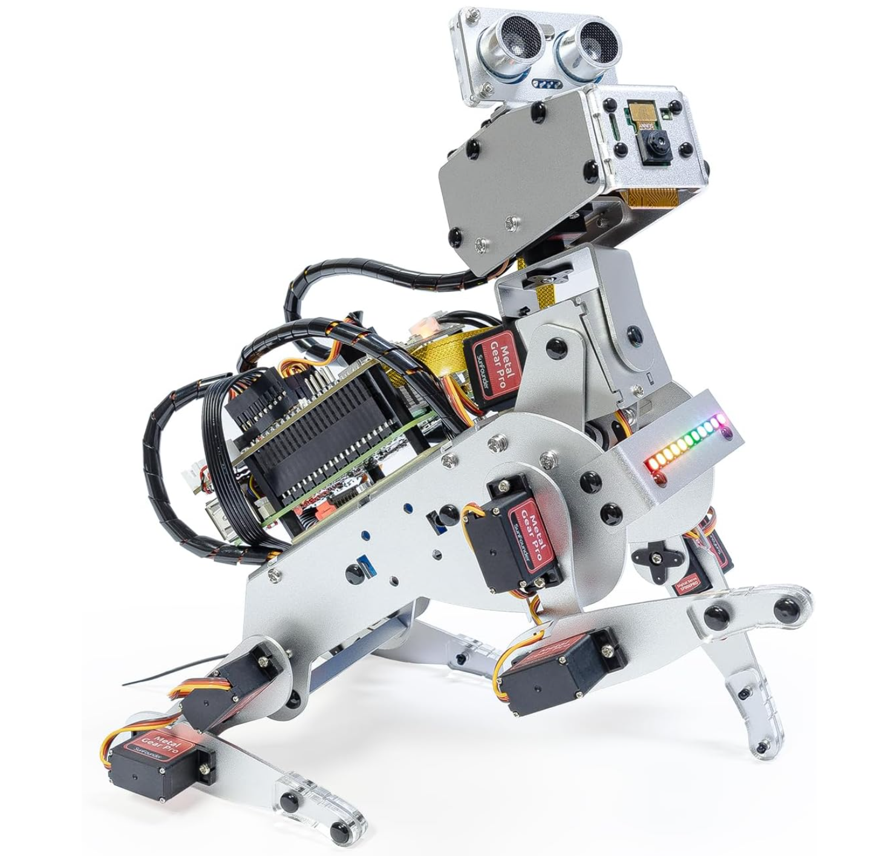
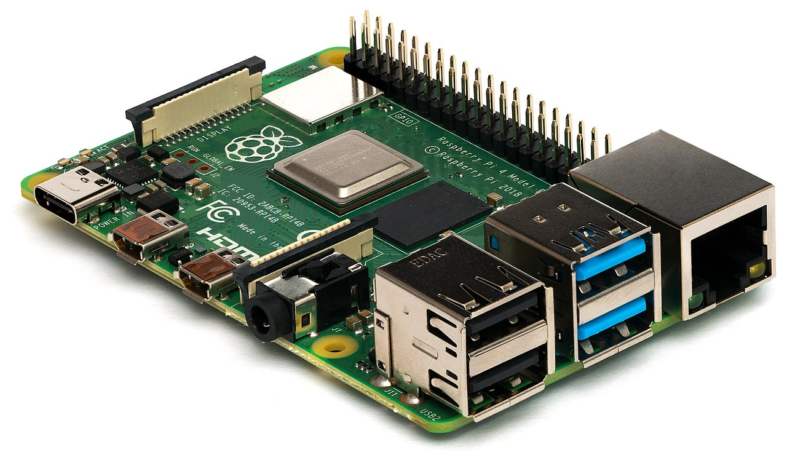

PiDog Autonomous
Quadruped Platform
R&D programme to build an autonomous quadruped robot using PX4, SunFounder PiDog, and Raspberry Pi 4 — with camera and ultrasonic room mapping, autonomous missions, and live integration with the Karneth Strata Unity C2 console.
R&D ObjectiveBuilding our own autonomous drone from source — sim to hardware to C2
Hardware PlatformPhase 1 & Phase 2 physical assets for the R&D programme

Phase 1 — SunFounder PiDog AI Robot Dog In Transit
Quadruped robot kit with 12 servo joints, camera module, ultrasonic sensor, gyroscope, and rechargeable battery. Python SDK with AI/LLM integration support. Indoor room mapping and autonomous missions.

Compute Module — Raspberry Pi 4 Model B (8 GB) In Transit
Quad-core ARM Cortex-A72 at 1.8 GHz. Dual micro-HDMI, USB 3.0, Gigabit Ethernet, WiFi 5, Bluetooth 5.0. The brain of both Phase 1 and Phase 2 platforms running PX4 + Ubuntu.
Phase 2 — RobAvatar TinS-13 Tracked UGV Planned
Heavy-duty tracked chassis for outdoor all-terrain operations. 1.3m length, 240 kg self-weight, 100–300 kg payload. Dual brushless motors (0.75–3 kW each), Kevlar-reinforced rubber tracks, Matilda suspension. 48V LiFePO4 battery, 6–8 hour runtime. CANopen + RS-485 Modbus comms — native interface to PX4 differential drive.
System ArchitectureFrom operator console through PX4 to the PiDog quadruped
PiDog Hardware PlatformSunFounder PiDog AI Robot Dog Kit — quadruped with onboard perception
- 4 legs, 3 servo joints each — 12 degrees of freedom
- Walking, trotting, and turning gaits via Python SDK
- Rotate-in-place, sidestep, and variable speed
- PX4 differential drive model maps to left/right leg groups
- Pan/tilt camera head for active look-around
- Camera module for visual recognition and room mapping
- Ultrasonic distance sensor for obstacle detection
- 6-axis gyroscope/accelerometer for attitude estimation
- Future: SLAM (Simultaneous Localisation and Mapping) pipeline
- Stream camera feed to Unity C2 for operator awareness
- SunFounder Python SDK for low-level servo and sensor control
- Compatible with LLM integration (ChatGPT-4o, Gemini, Grok)
- Voice and video recognition capabilities
- Mobile app control for manual override
- PX4 autopilot layer for autonomous mission execution
Simulation EnvironmentFive simulators enabling full development and testing without hardware
| Simulator | Type | Purpose | Status |
|---|---|---|---|
| Gazebo Harmonic | 3D Physics | Primary SITL — full sensor simulation, terrain, multi-vehicle | Installed |
| Gazebo Classic | 3D Physics | Legacy sim v11.10 — large model library, proven stability | Installed |
| jMAVSim | Lightweight | Quick iteration — Java 17, minimal dependencies, fast startup | Installed |
| JSBSim | Flight Dynamics | High-fidelity aero v1.2.4 — NASA-grade flight dynamics engine | Installed |
| FlightGear | Visual | Visual flight sim v2020.3.6 — photorealistic rendering, weather | Installed |
| PX4 SIH | Internal | Simulation-in-Hardware — runs inside PX4, no external sim needed | Built-in |
Ground Control & Development ToolsInstalled and configured for immediate development
Build EnvironmentCross-compilation toolchain for ARM target and native SITL
| Component | Details | Status |
|---|---|---|
| WSL2 Ubuntu 22.04 | 16 GB RAM, 8 cores, 4 GB swap — host build environment | Running |
| ARM Cross-Compiler | gcc-arm-linux-gnueabihf 11.4 — targets Cortex-A72 | Installed |
| RPi4 Build | px4_raspberrypi_default — 1270 targets, 49 MB ELF binary | Built |
| SITL Build | px4_sitl_default — native x86 with Gazebo bridge + OpenCV, 1158 targets | Built |
| PX4 Repo | /root/PX4-Autopilot — main branch, all 33 submodules | Cloned |